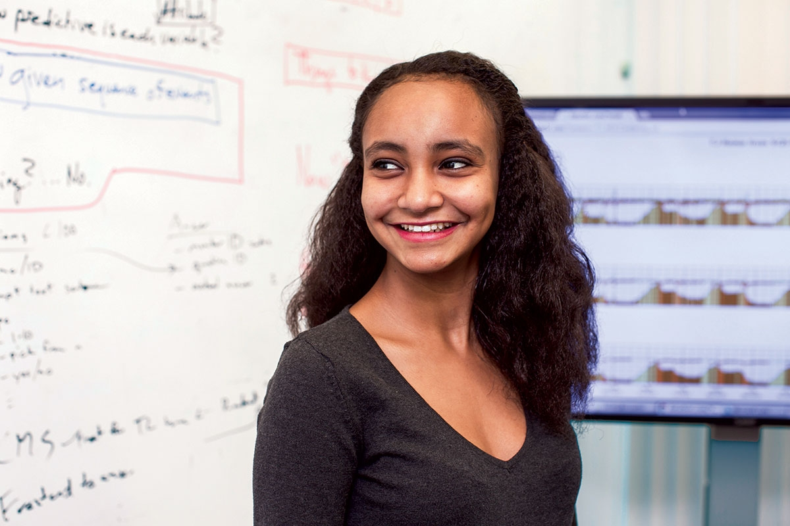

I'm a data scientist and software engineer with an interest in open source software and data science for social good.
My interests in all things technology started when I was 13 years old. After watching a documentary series on the history of computing, I fell in love with the computers and the things they can do. I became especially interested in the fields of artificial intelligence, machine learning, and natural language processing. After self-studying these fields, I went on to pursue a degree in Computer Science with a focus on artificial intelligence at Northwestern University.
My passion for technology is not only technical, I'm also extremely excited about the communities that build around technology. I currently organize the PyData Chicago community in Chicago, a group of data scientists and researcher who meet monthly to discuss the latest in machine learning and scientific software.
In addition to organizing communities in Chicago that focus on gathering individuals around open source, I'm also an avid open source contributor. To view projects that I have contributed to, you can check out my Github. Just scroll down to the bottom of this page and click on the cat-like icon (you'll know the one!).
In my free time, I enjoy running, cycling, working out, and drinking tea. I enjoy the riveting read or two so feel free to email me with any book recommendations. I'm also a big fan of music, so be sure to follow me on Spotify to check out some of my public playlists (I keep the embarrassing 80s pop ones to myself).